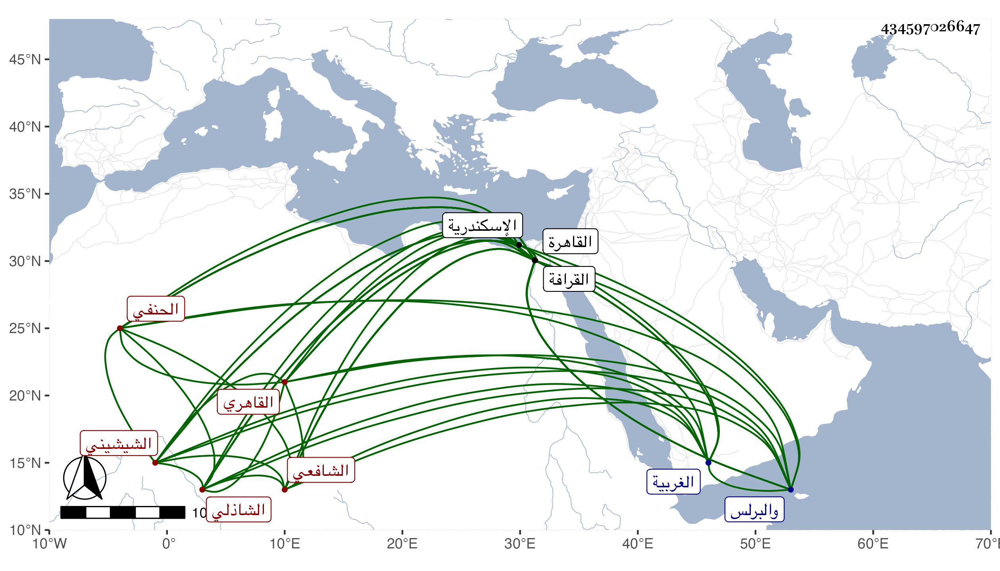

0902Sakhawi.DawLamic.ITO20230111-ara1.EIS1600.434597026647
Biography ID: 434597026647
717
خلف بن محمد بن محمد بن علي الزين أبو محمد المشالي ثم الشيشيني القاهري الحنفي ثم الشافعي الشاذلي والد أبي النجا محمد الآتي . ولد بمشال من قرى الغربية ونشأ بها يتيما فقرأ القرآن ثم جوده بالنحرارية على ابن زين ثم قدم القاهرة ولازم الشيخ محمد الحنفي وصاحبه أبا العباس السرسي وبه انتفع في الفقه وأصوله والعربية وغيرها ومما أخذه عنه البديع في الأصول لابن الساعاتي بحثا وأجازه به وبغيره ، وكذا قرأ عليه شرحه للسراج الهندي وقرأ على البساطي أصول الدين وعلى ابن الهمام أشياء من العقليات والنقليات ومنها المسايرة في العقائد المنجية في الآخرة من تأليفه ، وكتب له إجازة وصفه فيها بالأخ في الله الشيخ الأجل نفع الله به وقال قراءة بحث وتحقيق فلقد أحسن الاستفادة والافادة وصادفت أهليته متقدمة على القراءة فوجبت إجازته بها بل وكل ما كان في معناها فأجزته بهذا الفن وبما أجزت به من أصول وعربية ومنقول ومعقول ، والمسئول منه تذكرى بدعائه الصالح والله تعالى يديم النفع به إنه سميع قريب جواد مجيب ، وبلغني أنه لما رام قراءة المسايرة عليه أشار ببحثه له أولا مع أبي العباس السرسي ففعل وكذا اجتمع بالقاياتي وسمع عليه وبشيخنا وقرض له فيما قيل بعض مناظيمه وهي كثيرة فاثنتان في أصول الدين وواحدة في علم الحديث وأخرى في السيرة النبوية وأخرى في أحوال الموت سماها المبشرة وأخرى في العربية وأخرى في فقه الحنفية وأخرى في شرح الكنز وأخرى في أصول الشافعية لم تكمل واحدة من الثلاثة وأخرى اسمها وجوه القرآن وشرحها وعمل رسالة في علم الكلام سماها السلسلة وشرحها وشرح الحكم لابن عطاء الله وغير ذلك كنظم التلخيص ، ولقيته في زاوية القادرية بالقرافة فسمعت من لفظه أشياء لم أكتبها ، وكان فاضلا ممن يميل إلى ابن عربي وينظر في فتوحاته المكية وقام عليه أبو القاسم النويري بسبب ذلك كما بلغني ، وفي الآخر استقر في مشيخة جامع ابن نصر الله بقوة وتصدى للاقراء والافتاء على مذهب الشافعي وحفظ المنهاج حينئذ في مدة يسيرة وكذا حفظ إذ ذاك المشارق للصغاني وتفسير الديريني المنظوم كل هذا وقد ناف على السبعين واستمر بفوة حتى مات في يوم الخميس ثالث المحرم سنة أربع وسبعين ودفن داخل مقام أبي النجا فيها رحمه الله وعفا عنه . ورأيت له قصيدة تسمى زهر الكمام في شرح حال الوضوء والصلاة والصيام على مذهب الشافعي أرخ هو كتابته لها في ربيع الأول سنة عشرين وكذا رأيت بخطه المؤرخ كذلك له عقيدة أهل الحق وطريقة أهل الصدق من أهل السنة من الخلق قرضها له العلاء القطبي والد إبراهيم وأخيه وعندي في ترجمته من معجمي من نظمه ألغاز نحوية . وترجمه ولده بأنه كان الغالب عليه التصوف ومطالعة كلام أهله والاكثار من نقله وأنه أخذ الطريق عن جماعة كان يشير من بينهم لمحمد الحنفي وكان محبا لجمع العامة على الذكر كثير السآمة من طول الاقامة في بلد فأقام بكل من القاهرة والبرلس واسكندرية ثم بالقاهرة مدة حتى كانت منيته بفوة وكان قدمها وهو شاب فبات بضريح أبي النجا فيها وصادف رجلا صالحا فتذاكر معه في علم الطريق بحيث طابا وسمع للتابوت قعقعة عجيبة وانه لم يغتب أحدا مذ عقل أمره ولا مكن من ذلك بحضرته مع المداومة على التهجد حتى في البرد الشديد وبعد الشيخوخة وملازمة المطالعة وقلة الكلام وسعة الخاطر والتأني والمحبة في الخمول وعدم التأنق في معيشته وسائر أحواله رحمه الله وإيانا وعفا عنه .
